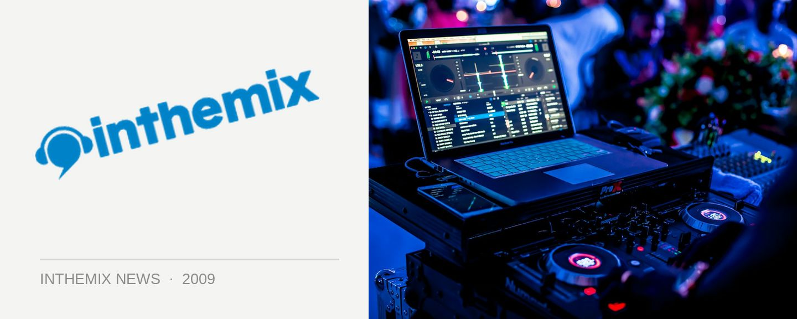

Fergie & Slam bring the techno this September
Two of techno’s hottest acts will be visiting Australia later this month, both on separate tours and visiting with different tour agents – but on several occasions over two weekends, in an extra-special surprise for fans they’ll be hooking up to play at same shows. Darkbeat in Melbourne, Empire in Brisbane and Chinese Laundry in Sydney will be hosting Fergie and Slam under the one roof!
It’ll be Fergie’s big return to Australia after a nearly four-year absence, and he’ll be coming back with a profile that’s just as big as it’s ever been in his decade-long career. Stuart McMillan and Orde Meikle AKA Slam on the other hand are coming off a slammin’ (chortle) 12 months, which has seen them play a round of massive gigs like Glastonbury, celebrating ten years of their successful club night Pressure in Scotland as well as kicking off their own Paragraph Records imprint.
Fergie tour dates:
Fri Sept 18 – Brown Alley, Melbourne
Sat Sept 19 – Shape, Perth
Sun Sept 20 – Empire, Brisbane
Sat Sept 26 – Chinese Laundry, Sydney
Slam tour dates:
Fri Sept 18 – Brown Alley, Melbourne
Sat Sept 19 – Secret Location, TBA
Sun Sept 20 – Empire, Brisbane
Fri 25th Sep – La La Land, Byron Bay
Sat Sept 26 – Chinese Laundry, Sydney
Sun Sept 27 – Shape Bar, Perth